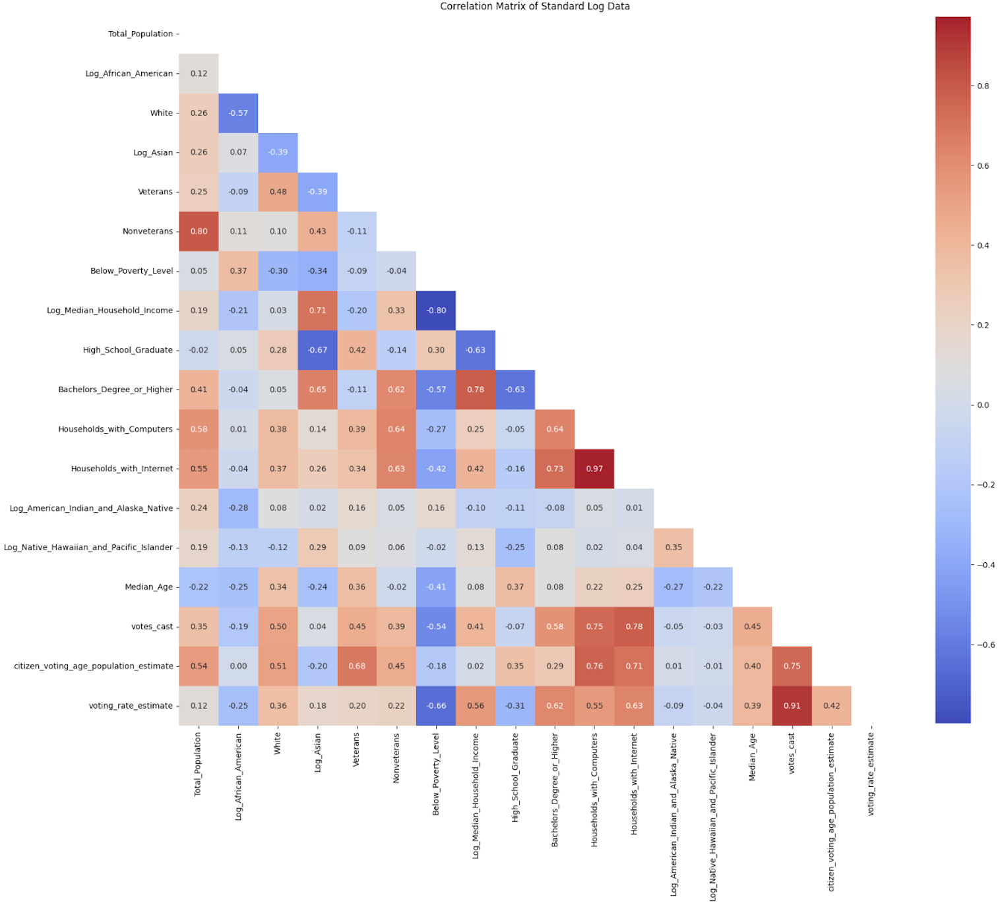
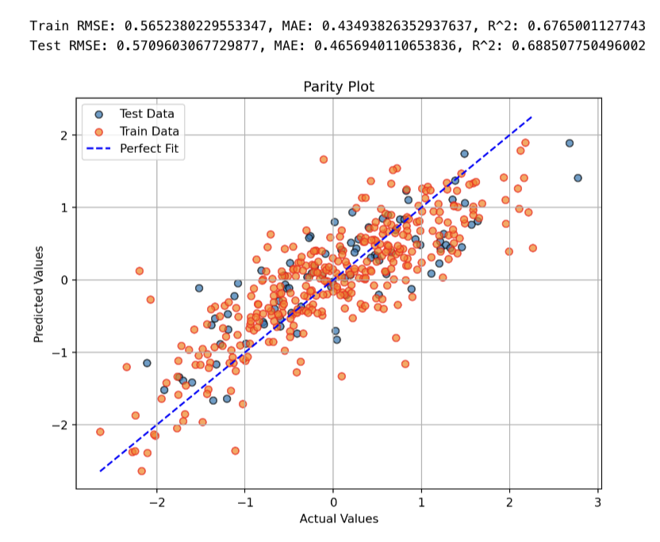
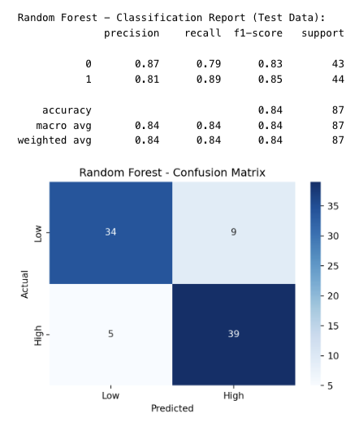
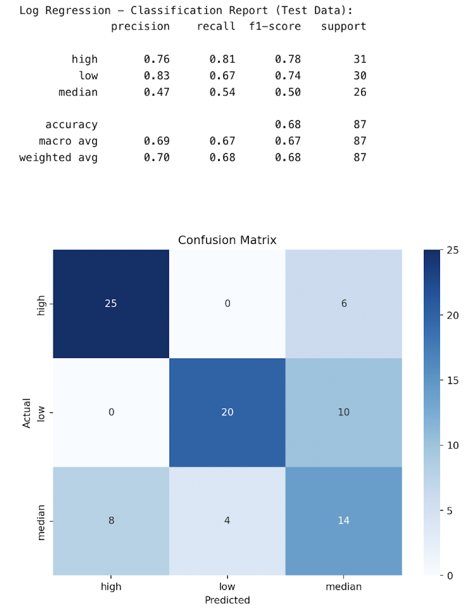
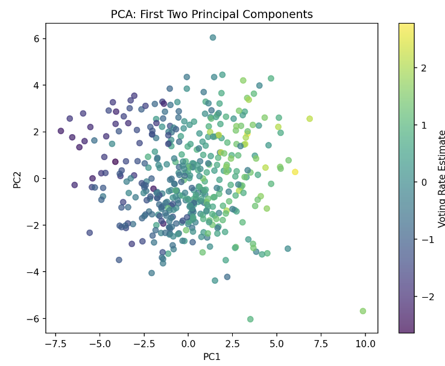
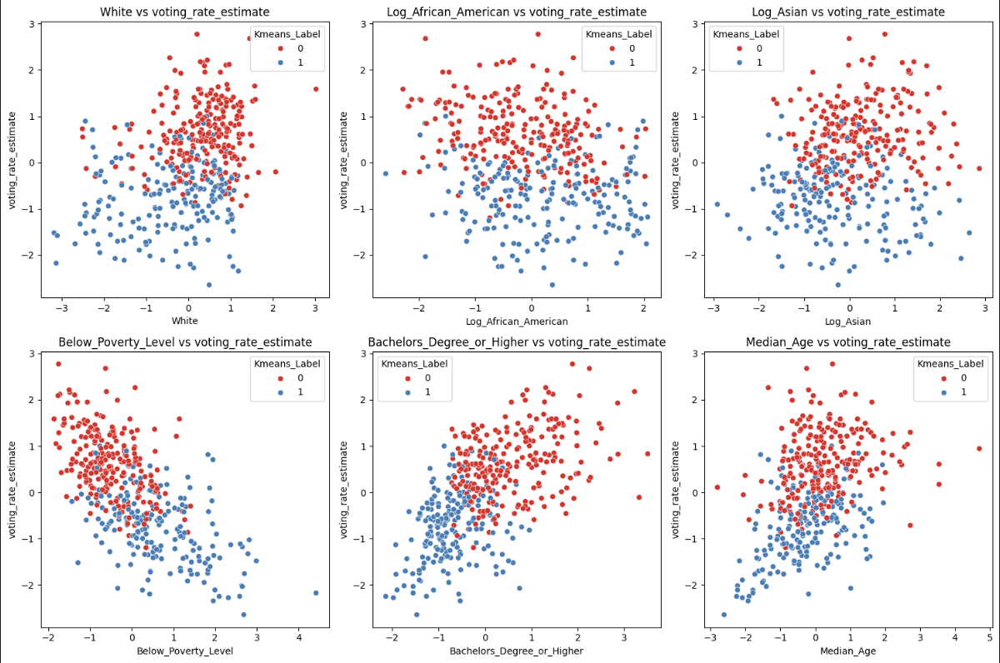

Voting Rates in Congressional Districts: Key Findings
Final Report
Introduction
Voting is an important part of the democratic process, and increasing voter turnout is crucial in allowing all voices to be heard. Voter turnout varies significantly throughout districts, and understanding the variables that drive voter turnout can provide stakeholders with valuable information to increase voter participation.
Objective
The objective of this project is:
1. To collect and clean relevant datasets related to voter turnout and population information.
2. To perform exploratory data analysis (EDA) to identify key trends and patterns.
3. To apply unsupervised learning techniques (clustering, dimensionality reduction) and supervised learning models (classification, regression) to uncover insights.
4. To analyze specific factors such as race, education, or socioeconomic factors, and highlight any patterns or trends revealed in the data.
Key Findings
Correlation Heatmap

Figure 1: Correlation Heatmap of all features
Supervised Learning
Regression
Linear regression model predicted voter turnout with moderate accuracy.
RMSE:
- Linear Regression: 0.571
- This means the model’s predictions are, on average, 0.571 standard deviations away from the actual values.
Cross Validation: 0.588
- Lasso Regression: 0.576
- Linear Regression: 0.571
MAE:
- Linear Regression: 0.465
- The average absolute difference between predicted and actual values is 0.465 standard deviations.
- Cross Validation: 0.456
- Lasso Regression: 0.469
- Linear Regression: 0.465
R^2:
- Linear Regression: 0.688
- 68.8% of the variance in voter turnout is explained by the model
- Cross Validation: 0.64
- Lasso Regression: 0.682
- Linear Regression: 0.688
Key Predictors: High School Graduate, Poverty Rate and Income, Internet Access, Median Age
This model has implications for real-world use. However, with a moderately high prediction error, the model still requires further improvement and calibration before being reliably applied in real voting scenarios. Doing this will allow policymakers and analysts to gain insights and make educated decisions.
Linear Regression Visual

Figure 2: Parity Plot and Accuracy Metrics for Regression
Binary Classification
Classifying Districts between high and low voting rates
- Logistic Regression and Random Forest models achieved 82% and 84% accuracy
- Key Predictors: Education, Income, Internet Access, Poverty Rate
Random Forest Binary Classification Visual

Figure 3: Confusion Diagram and Accuracy Metrics with Random Forest Binary Classification
Multi Classification
Classifying districts between high and medium, and low voting rates
- Accuracy
- Logistic Regression: 0.68
- Random Forest: 0.62
- Decision Tree: 0.56
- Key Predictors:
- High Voting Rates
- Education, Income, Internet Access,
- Medium Voting Rates
- Overlapping patterns make it difficult to pinpoint
- Low Voting Rates
- Poverty Rate
- High Voting Rates
Logistic Regression Multi-Class Classification Visual

Figure 4: Confusion Diagram and Accuracy Metrics for Logistic Regression Binary Classification
Unsupervised Learning Predictions
Dimensionality Reduction
PCA (Principal Component Analysis)
- PC1 (driven by income, education, and population) explains 55% of the variance and is correlated with high voting rates.
- Insight: Socioeconomic conditions are strong indicators of voter turnout.
 Figure 5: PCA: First Two Principal Components Colored by Voting Rate Estimate
t-SNE Clustering
- t-SNE visualizations revealed distinct groupings:
- High Voting Rates: Clustered with areas of high income and education.
- Low Voting Rates: Grouped with higher poverty and fewer resources.
- High Voting Rates: Clustered with areas of high income and education.
Clustering
K-Means Clustering
- Insight: Voter turnout patterns show two main groups:
- High Voting Rates: Areas with higher education levels, Asian and White populations, older age demographics, and Access to the Internet.
- Low Voting Rates: Linked to regions with Higher Poverty Levels and larger African American populations.
- High Voting Rates: Areas with higher education levels, Asian and White populations, older age demographics, and Access to the Internet.
 Figure 6: K-Means Clustering Scatterplot: Demographic Features vs. Voting Rate Estimate
DBSCAN Clustering
- Insight: Clustering based on density failed to identify meaningful patterns due to the uniform distribution of data.
Hierarchical Clustering
- Insight: Similar to K-Means—regions with higher education and income levels demonstrate higher voter turnout, while areas with poverty and lower education lag behind.
Conclusion and Insights
- Education Drives Participation
- Insight: Areas with higher education levels consistently show higher voter turnout.
- Action: Invest in voter education programs targeting undereducated communities.
- Insight: Areas with higher education levels consistently show higher voter turnout.
- Income and Poverty
- High poverty levels correlate with lower voter participation.
- Higher income regions tend to have higher voting rates.
- Action: Address socioeconomic barriers to voting by providing:
- Transportation
- Childcare support
- Paid voting hours
- Demographics
- Insight: Asian and White populations vote at higher rates, while turnout is lower in regions with larger African American populations.
- Action: Develop culturally relevant outreach campaigns to incentivize voting among underserved groups.
- Insight: Asian and White populations vote at higher rates, while turnout is lower in regions with larger African American populations.
- Internet Access
- Insight: Regions with higher internet access tend to have higher voting rates; this could be due to increased awareness of the news and social media
- Action: Ensure affordable internet access in underserved areas to increase voter engagement and awareness.
- Action: Increase voter awareness without the use of the internet, including community events, workshops, and printed materials